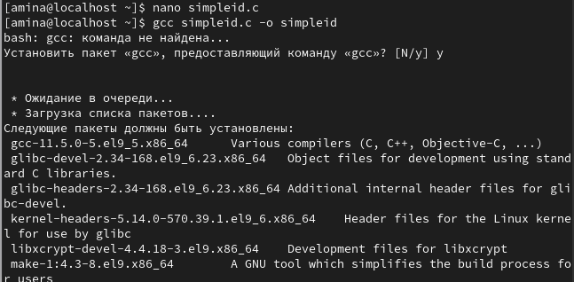
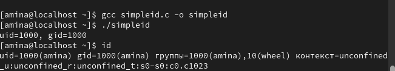
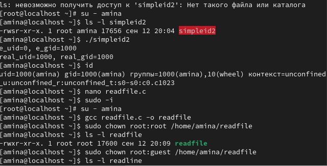
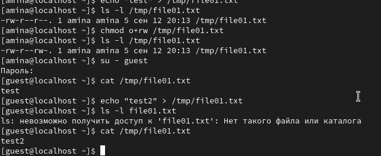

Изучение механизмов изменения идентификаторов, применения SetUID- и
Sticky-битов. Получение практических навыков работы в консоли с
дополнительными атрибутами. Рассмотрение работы механизма смены
идентификатора процессов пользователей, а также влияние бита Sticky на
запись и удаление файлов
1.
Войдите в систему от имени пользователя guest. Создайте программу
simpleid.c:
([рис.
@fig-001]).

рис.1.1
2.
Скомплилируйте программу и убедитесь, что файл программы создан: gcc
simpleid.c -o simpleid. Выполните программу simpleid: ./simpleid.
Выполните системную программу id: id и сравните полученный вами
результат с данными предыдущего пункта задания. Усложните программу,
добавив вывод действительных идентификаторов([рис. @fig-002]).

рис.2.1
3.
Получившуюся программу назовите simpleid2.c. Скомпилируйте и запустите
simpleid2.c: gcc simpleid2.c -o simpleid2 ./simpleid2. От имени
суперпользователя выполните команды: chown root:guest
/home/guest/simpleid2, chmod u+s /home/guest/simpleid2. Используйте sudo
или повысьте временно свои права с помощью su. Поясните, что делают эти
команды. Выполните проверку правильности установки новых атрибутов и
смены владельца файла simpleid2: ls -l simpleid2. Запустите simpleid2 и
id: ./simpleid2 id. Сравните результаты. Проделайте тоже самое
относительно SetGID-бита
([рис.
@fig-003]).

рис.3.1
4.
Откомпилируйте её. gcc readfile.c -o readfile Смените владельца у файла
readfile.c (или любого другого текстового файла в системе) и измените
права так, чтобы только суперпользователь (root) мог прочитать его, a
guest не мог. Проверьте, что пользователь guest не может прочитать файл
readfile.c. Смените у программы readfile владельца и установите
SetU’D-бит. Проверьте, может ли программа readfile прочитать файл
readfile.c?
([рис.
@fig-004]).

рис.4.1
5.
Выясните, установлен ли атрибут Sticky на директории /tmp, для чего
выполните команду ls -l / | grep tmp От имени пользователя guest
создайте файл file01.txt в директории /tmp со словом test: echo “test”
> /tmp/file01.txt Просмотрите атрибуты у только что созданного файла
и разрешите чтение и запись для категории пользователей «все остальные»:
ls -l /tmp/file01.txt, chmod o+rw /tmp/file01.txt, ls -l
/tmp/file01.txt. От пользователя guest2 (не являющегося владельцем)
попробуйте прочитать файл /tmp/file01.txt: cat /tmp/file01.txt. От
пользователя guest2 попробуйте дозаписать в файл /tmp/file01.txt слово
test2 командой echo “test2” > /tmp/file01.txt. Удалось ли вам
выполнить операцию? Проверьте содержимое файла командой cat
/tmp/file01.txt. От пользователя guest2 попробуйте записать в файл
/tmp/file01.txt слово test3, стерев при этом всю имеющуюся в файле
информацию командой echo “test3” > /tmp/file01.txt. Удалось ли вам
выполнить операцию? Проверьте содержимое файла командой cat
/tmp/file01.txt
([рис.
@fig-005]).
рис.5.1
Выводы
В ходе лабораторной работы были изучены механизмы изменения
идентификаторов, применения SetUID- и Sticky-битов. Были получены
практические навыки работы с дополнительными атрибутами файлов в
Linux.
Исследование показало, что:
SetUID-бит позволяет программе выполняться с правами владельца
файла
Sticky-бит предотвращает удаление файлов в общих директориях
пользователями, не являющимися владельцами этих файлов
Эти механизмы обеспечивают дополнительный уровень безопасности в
системе
Работа позволила лучше понять механизмы дискреционного разграничения
доступа в Linux и их практическое применение.